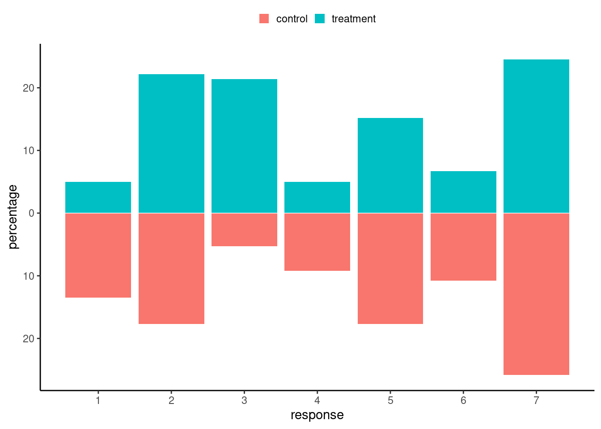
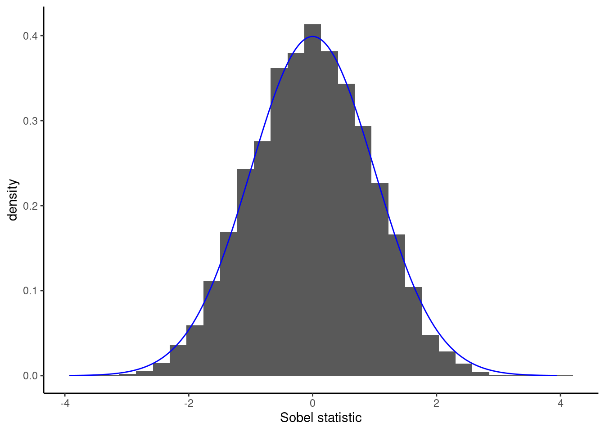
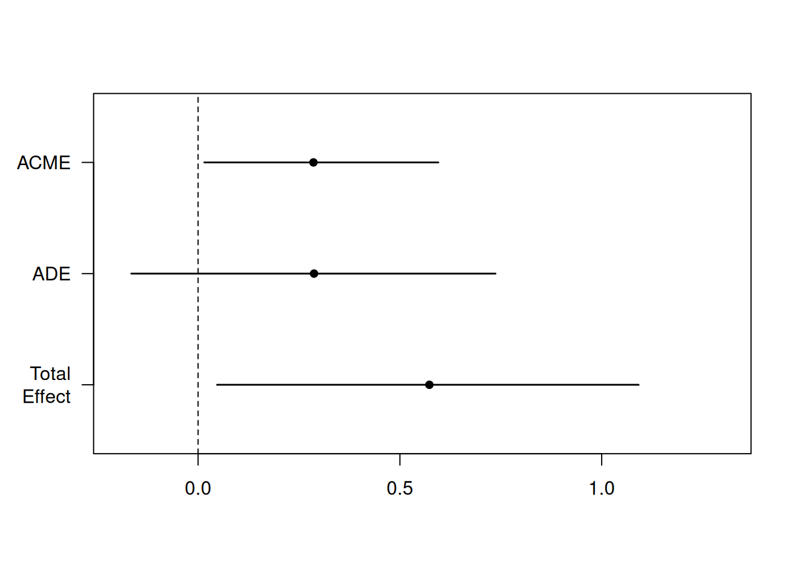
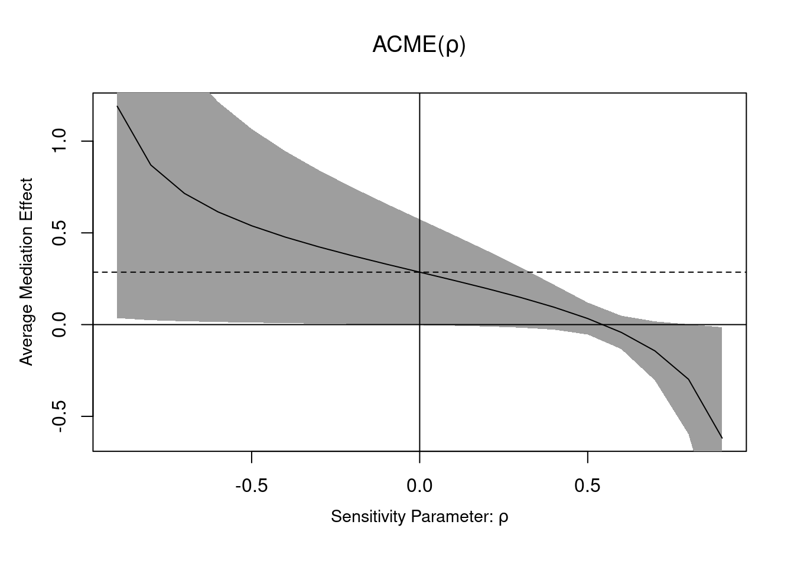

13 Causal inference
Statisticians are famous for repeating ad nauseam that “correlation is not causation”. This statement illustrated on the website Spurious correlations by Tyler Vigen, which shows multiple graphs of absurd relations, many of which are simply artifact of population growth. As second example, consider weather forecasts (of rain) and the number of people carrying umbrellas in the streets. These phenomena are positively correlated, but if I intervene and force everyone around to carry umbrellas, it will impact neither weather forecasts nor the weather itself. While correlation (effectively what is being measured in a linear regression model) contains information about presence of a relationship between two variables, it does not allow one to determine cause from effect (i.e., the direction). This can be determined through experiments, or via logical models.
The field of causal inference is concerned with inferring the effect of an action or manipulation (intervention, policy, or treatment) applied to an observational unit and identifying and quantifying the effect of one variable on other variables. Such action may be conceptual: we can imagine for example looking at student’s success (as measured by their grades) by comparing two policies: giving them timely feedback and encouragement, versus no feedback. In reality, only one of these two scenarios can be realized even if both can conceptually be envisioned as potential outcomes.
The content of this chapter is divided as follows. First, we discuss the logical interrelation between variables using directed acyclic graphs and focus on relations between triples defining confounders, colliders and mediators. We then describe how we can retrieve causal effects (in an abstract setting). Finally, we present the linear mediation model popularized by Judd and Kenny (1981) and Baron and Kenny (1986). We focus on the hidden assumptions that can undermine causal claims in linear mediation models.
13.1 Basics of causal inference
In the first chapter, we stated that randomized experiments were the gold standard of science. This is mostly because, through careful control of conditions (keeping everything else constant) and manipulating experimental factors, we can determine whether the latter cause changes in the response. However, not everything can be studied using experiments and we need more general rules and definitions to study causal inference when randomization isn’t possible.
Denote by \(Y_i(j)\) the potential outcome of individual \(i\) assigned to treatment \(X_j\), i.e., the value of the response in an hypothetical world where we assigned this observation to a particular group. With a binary treatment \(X \in \{0,1\}\), we would be interested by the difference in individual response, \(Y(1)-Y(0)\) or the individual response \(Y(1)/Y(0)\), depending on the context, and this readily extends to more than two groups. In an experiment, we can manipulate assignment to treatment \(X\) and randomize units to each value of the treatment to avoid undue effects from other variables. The potential outcomes framework applies to in between-subject designs because experimental units are assigned to a single treatment, whereas in within-subject designs a single ordering is presented. The fundamental problem of causal inference is that, while we would like to study the impact of every action on our response for each individual, only one of these potential outcomes is observed: at least half of the potential outcomes are unobserved.
| \(i\) | \(X_i\) | \(Y_i(0)\) | \(Y_i(1)\) | \(Y_i(1)-Y_i(0)\) |
|---|---|---|---|---|
| 1 | 1 | ? | 4 | ? |
| 2 | 0 | 3 | ? | ? |
| 3 | 1 | ? | 6 | ? |
| 4 | 0 | 1 | ? | ? |
| 5 | 0 | 5 | ? | ? |
| 6 | 1 | ? | 7 | ? |
We are effectively comparing the distribution of the outcome variable \((Y \mid X)\) for different values of the experimental treatment set \(X\) (more generally, these are referred to as action sets). We talk about causation when for treatment (\(X=j\)) and control (\(X=0\)), the distributions of \((Y \mid X=j)\) differs from that of \((Y \mid X=0)\), as illustrated in Figure 13.2. We must thus resort to population-level estimates by considering averages and other summaries to draw inferences.

Rather than look at the individual treatment effect difference, we can focus on averages over the population. The most common measure of causation is the average treatment effect, which is the difference between the population averages of treatment group \(X=j\) and the control group \(X=0\), \[\begin{align*} \textsf{ATE}_j = \underset{\substack{\text{expected response among}\\\text{treatment group $j$}}}{\mathsf{E}(Y \mid X=j)} - \underset{\substack{\text{expected response among}\\\text{control group}}}{\mathsf{E}(Y \mid X=0)} \end{align*}\] which is a valid estimator of \(\mathsf{E}\{Y(j) - Y(0)\}\) provided that \(X\) is randomly allocated.
What assumptions are necessary to draw causal conclusion? In an experimental setting, we need the following:
- conditional ignorability, which states that potential outcomes are independent (denoted with the \({\perp\mkern-10mu\perp}\) symbol) of assignment to treatment given a set of explanatories \(\boldsymbol{Z}.\) In notation \(\{Y(0), \ldots, Y(J)\}\ {\perp\mkern-10mu\perp}\ X \mid \boldsymbol{Z}\) (if the latter is an empty set, we talk about ignorability).
- lack of interference: the outcome is unaffected by the treatment assignment of other participants.
- consistency: given a treatment \(X\) taking level \(j\), the observed value for the response \(Y \mid X=j\) is equal to the corresponding potential outcome \(Y(j)\).
The two last assumptions are sometimes pooled together under the umbrella term stable unit-treatment value assumption (SUTVA), implying that ‘’no other version or treatment assignment would lead to different potential outcome’’ (Imbens and Rubin 2015), which also suggests the effect of treatment is constant.
Conditional ignorability for observational data
Causal inference is possible in observational settings, but some of the assumptions are unverifiable and typically much stronger than for randomized experiments. Notably, we need to identify a sufficient set of confounders \(\boldsymbol{Z}\), i.e., variables which cause both \(X\) and the outcome \(Y\) but are not of interest, to incorporate in the model to recover the effect due to \(X\). We can then look effect averaging over the distribution of \(\boldsymbol{Z}\). This method is valid as long as there is a positive probability of being assigned to each group of \(X\) regardless of the value of the covariates \(\boldsymbol{Z}\), an assumption sometimes known as positivity. The model must also be correctly specified, and there must be no omitted confounders.
In summary, we can estimate the average treatment effect in experimental designs if we randomize the effect \(X=j,\) if our subjects comply with their treatment assignment, and more importantly if we use a random sample which is representative of the population.
Example 13.1 The Agir cohort offers a comprehensive experience for the first three trimesters of the bachelor in administration program. These students take the same exams as regular students, but their class average are higher in the mandatory statistics course. However, since participation in the program is reserved for students who postulated to be part of the cohort, and who must be team players who are autonomous and with a keen liking for inverse pedagogical teaching methods, no conclusion can be drawn. Indeed, it may be that the teaching method is well suited to them but not to general students, or their better grades may be due to the fact that the Agir students are more motivated or stronger in statistics to being with.
If we compared the outcome of regular bachelor cohort with Agir students, we may also have violation of “no interference”: if students from different programs share course material or study together, then this lack of compliance may induce differences in response relative to their group assignment.
In many fields, the unconditional effect is not interesting enough to warrant publication free of other explanatory variables. It may be that the effect of the treatment is not the same for everyone and depends on some covariate \(Z:\) for example, a study on gender discrimination may reveal different perceptions depending on gender \(Z,\) in which case the average treatment effect might not be a sensible measure and we could look at conditional effects. We may also be interested in seeing how different mechanisms and pathways are impacted by treatment and how this affects the response. VanderWeele (2015) provides an excellent non-technical overview of mediation and interaction.
13.1.1 Directed acyclic graph
Causal inference requires a logical conceptual model of the interrelation between the variables. We will look at directed acyclic graphs to explain concepts of confounding, collision and mediation and how they can influence our conclusions.
To illustrate the relationship between variables, we use diagrams consisting of directed acyclic graph (DAG). A graph is a set of nodes and vertices: each node represents a variable of interest and these are linked with directed edges indicating the nature of the relation (if \(X\) causes \(Y\), then \(X \to Y\)). The acyclic simply forbids loops: if \(X\) causes \(Y\), then \(Y\) cannot cause \(X\) (typically, violations are due to time dependence, which means that we must consider a larger DAG where \(Y\) is indexed by time, for example when medical treatment can cause changes in condition, which themselves trigger different treatments.
Directed acyclic graphs are used to represent the data generating process that causes interdependencies between variables, while abstracting from the statistical description of the model. This depiction of the conceptual model helps to formalize and identify the assumptions of the model. To identify a causal effect of a variable \(X\) on some response \(Y\), we need to isolate the effect from that of other potential causes. Figure 13.3 shows an example of DAG in a real study; the latter is a simplification or abstraction of a world view, but is rather complicated.

At a theoretical level, the DAG will help identify which paths and relations to control through conditioning arguments to strip the relation to that of interest. Judea Pearl (e.g., Pearl, Glymour, and Jewell 2016) identifies three potential relations between triples of (sets of) variables:
- chains (\(X \to Z\to Y\)),
- forks (\(Z \leftarrow X \rightarrow Y\)) and
- reverse forks (\(Z \rightarrow X \leftarrow Y\)).
These are represented in Figure 13.4. In the graph, \(X\) represents an explanatory variable, typically the experimental factor, \(Y\) is the response and \(Z\) is another variable whose role depends on the logical flow between variables (collider, confounder or mediator).

In an experimental design, confounding effects from the experimental treatment \(X\) to the response \(Y\) are controlled by randomization or sample selection: all incoming arrows inside \(X\) from other variables are removed. If we include additional variables in the model which happen to be colliders, then we won’t recover the causal effect of interest. Addition of mediators will let us filter the effect due to \(Z\) from the direct effect of \(X\).
It is essential to determine via logic or otherwise (experiments can help!) the direction of the relationship, lest we run into trouble. Many statistical models commonly used, including regression models, cannot provide an answer to a problem that is philosophical or conceptual in nature. Indeed, correlation is symmetric and insufficient to infer the direction of the arrows in the directed acyclic graph.
The conclusions we will draw from statistical models depend on the nature of the relation. For example, in an observational setting, we could eliminate the effect of a confounding variable by controlling in a regression model, matching or by stratifying for different values of the confounders in order to extract the causal estimate of \(X\) on \(Y\). Matching consists in creating paired samples (with similar characteristics for explanatories), and comparing the pairs. Stratification consists of analysing subpopulations separately.
Caution about the kitchen sink approach
Controlling for a collider is counterproductive, as we would get erroneous conclusions: Kowal (2021) reportedly claimed married couples with more children were less happy. As Richard McElreath hinted online, controlling for marriage (through sample selection) is incorrect since unhappy couples tend to divorce, but families with many children are less likely to divorce.
13.2 Mediation
We need to add to our logical causal model represented by a directed acyclic graph data generating mechanisms that prescribes how variables how interrelated. Our ability to establish mediation will depend on the model and a set of assumptions, some of which won’t be verifiable.
To define in full generality the treatment and mediation effect, we consider the potential outcome framework. Following Pearl (2014), we use the notation \(\text{do}(X=x)\) is used to denote experimental manipulation of \(X\), to distinguish it from correlation in observational data. The resulting potential outcome for individual \(i\) is \(Y_i(x, m)\), with explanatory or experimental covariate/factor \(x\) and mediator \(m\). Likewise, \(M_i(x)\) is the potential mediator when applying treatment level \(x\).1 Value \(x_0\) represents the baseline or control value for our experimental manipulation.
Definition 13.1 (Average total, conditional mediation and direct effects) For simplicity, we focus on binary treatment with \(X_i \in \{0,1\}\), with \(X_i=x_0=0\) the control and \(X=1\) for treatment. Until now, we have considered experiments in which we randomly allocate participants to groups, so we recovered the overall effect of treatment abstracting from other variables. The following definitions are standard, e.g. Robins and Greenland (1992), Pearl (2014), Imai, Keele, and Tingley (2010).
The average directed effect measures the flow along \(X \rightarrow Y\), disabling the pathway \(X \to M \to Y\) by fixing the mediator value: it is \[\begin{align*} \mathsf{ADE}(x) &= \mathsf{E}[Y_i \mid \text{do}\{X=1, M=M_i(x)\}] - \mathsf{E}[Y_i \mid \text{do}\{X=0, M=M_i(x)\}] \\&= \mathsf{E}[Y_i(1,M_i(x)) -Y_i(0, M_i(x))\} \end{align*}\] This measures the expected change in response when the experimental factor changes from treatment to control, while the mediator is set to a fixed value \(M_i(x)\) uniformly over the population. Fixing the mediator, which may or not be feasible experimentally.
The average causal mediation effect (also called indirect effect), is the main quantity of interest in mediation analysis. It is obtained by looking at changes in the outcome for a fixed intervention due to changing the values of the mediator to those it would take under the treatment and control group, respectively \(M_i(1)\) and \(M_i(0)\). \[\begin{align*} \mathsf{ACME}(x) &= \mathsf{E}[Y_i \mid \text{do}\{X=x, M=M_i(1)\}] - \mathsf{E}[Y_i \mid \text{do}\{X=x, M=M_i(0)\}] \\&= \mathsf{E}[Y_i\{x, M_i(1)\} -Y_i\{x, M_i(0)\}] \end{align*}\]
The total effect measures the average overall impact of changes in outcome \(Y\) (both through \(M\) and directly) when experimentally manipulating \(X\), \[\begin{align*} \mathsf{TE}_i &= \mathsf{E}[ Y_i \mid \text{do}(X=1)] - \mathsf{E}[ Y_i \mid \text{do}(X=0)] \\ &= \mathsf{E}[Y_i\{1, M(1)\}] - \mathsf{E}[Y_i\{0, M(0)\}], \end{align*}\] This is what we retrieve if we randomize treatment assignment and consider the average change in average response. The total effect is obtained as \(\mathsf{TE} = \mathsf{ACME}(X) + \mathsf{ADE}(1-X)\) for \(X=0,1.\) If there is no interaction between the treatment and the mediator, then the values of the average causal mediation effect and the average direct effect are the same regardless of the treatment assignment \(x\).
Definition 13.2 (Sequential ignorability assumption for mediation) To draw valid conclusions and build suitable estimation procedures, we need an assumption which can be decomposed into two components. The first component is: given pre-treatment covariates \(Z\), treatment assignment is independent of potential outcomes for mediation and outcome, \[\begin{align*} Y_i(x', m), M_i(x) {\perp\mkern-10mu\perp} X_i \mid \boldsymbol{Z}_i = \boldsymbol{z}. \end{align*}\] In order words, the values taken by the mediator and by the response exist independently of the treatment assignment and don’t change.2
The second component of the sequential ignorability assumption is as follows: given pre-treatment covariates and observed treatment, mediation is independent of potential outcomes, \[\begin{align*} Y_i(x', m) \perp\mkern-10mu\perp M_i(x) \mid X_i =x, \boldsymbol{Z}_i = \boldsymbol{z} \end{align*}\] The set of assumptions from Imai, Keele, and Tingley (2010) and Pearl (2014) are equivalent under randomization of treatment assignment, as we consider thereafter.
We assume also that any value of \(X\) given covariates \(\boldsymbol{Z}\) is possible (which is trivially satisfied when randomizing with equal probability), and that likewise any value of the mediator \(M\) is possible for any combination of covariates \(\boldsymbol{Z}\) and treatment assignement \(X\).
Measurement error
When measuring effects in psychology and marketing, it will often be the case that the conceptual causal model includes variables that cannot be directly measured. Proxies, as in Figure 13.5, add an additional layer of complexity and potential sources of confounding.

13.3 Linear mediation model
One of the most popular model in social sciences is the linear mediation model, popularized by Baron and Kenny (1986). Hayes’ PROCESS macros for SAS, SPSS and R have lead to the widespread adoption by researchers (Preacher and Hayes 2004). Bullock, Green, and Ha (2010) list limitations of the approach and provide examples in which the model does not have a meaningful causal interpretation.
The linear mediation model assumes that the effect of mediation and treatment is additive and that the response measurement is continuous. Consider an experimental factor \(X\) corresponding to treatments with control or reference \(x_0\) and postulated mediator variable \(M\), assumed continuous. Given uncorrelated unobserved noise variables \(\varepsilon_M\) and \(\varepsilon_Y\), we specify linear regression models, \[\begin{align*} M \mid X=x &= c_M + \alpha x + \varepsilon_M,\\ Y \mid X=x, M=m &= c_Y + \beta x + \gamma m + \varepsilon_Y \end{align*}\] where we use the contrasts parametrization, so that the reference category for the intercept corresponds to control (group \(x_0\)) and \(x\) the other category of interest, with \(\alpha\) capturing the difference between \(x\) and \(x_0\). The model for \(Y \mid X, M\) should include additional covariates \(\mathbf{z}\) to control for confounding between \(M\) and \(Y\) if the latter is suspected.
The average value for \(M(1) = c_M + \alpha\) and that of \(M(0)=c_M\). If we substitute the first equation in the second equation, we get that \[\begin{align*} \mathsf{ACME}(x) &= \mathsf{E}[Y\{x, M(1)\} -Y\{x, M(0)\}] = \alpha \gamma\\ \mathsf{ADE}(x) &= \mathsf{E}[Y\{1, M(x)\} -Y\{0, M(x)\}] = \beta \\ \mathsf{TE} &= \mathsf{E}[Y\{1, M(1)\} -Y\{0, M(0)\}] = \beta + \alpha \gamma \end{align*}\]
The parameters can be interpreted as the direct (\(\beta\)), conditional mediation effect (\(\alpha \gamma\)) and total (\(\beta + \alpha \gamma\)) effects. These parameters can be estimated using structural equation models (SEM), or more typically by running a series of linear regression.
The “sequential ignorability” assumption in the linear mediation models boils down to “no unmeasured confounders” in the relations \(X \to Y\), \(X \to M\) and \(M \to Y\): the first two are satisfied in experimental studies due to randomization if we can manipulate \(X\), as shown in Figure 13.7. This means \(\varepsilon_M\) and \(\varepsilon_Y\) must be independent of one another and, as a result, error terms should also be uncorrelated.
In the linear mediation model, we can estimate the conditional direct effect corresponding to the product of coefficients \(\alpha\gamma\). Absence of mediation implies the product is zero. Baron and Kenny (1986) recommended using Sobel’s test statistic, of the form \[\begin{align*} S &= \frac{\widehat{\alpha}\widehat{\gamma} - 0}{\mathsf{se}(\widehat{\alpha}\widehat{\gamma})} \\&= \frac{\widehat{\alpha}\widehat{\gamma}}{\sqrt{\widehat{\gamma}^2\mathsf{Va}(\widehat{\alpha}) + \widehat{\alpha}^2\mathsf{Va}(\widehat{\gamma}) + \mathsf{Va}(\widehat{\gamma})\mathsf{Va}(\widehat{\alpha})}} \end{align*}\] where \(\widehat{\alpha}\), \(\widehat{\gamma}\) and their variance \(\mathsf{Va}(\widehat{\alpha})\) and \(\mathsf{Va}(\widehat{\gamma})\) can be obtained from the estimated coefficients and standard errors.3 The Sobel’s statistic \(S\) is approximately standard normal in large samples, \(S \stackrel{\cdot}{\sim}\mathsf{Normal}(0,1)\), but the approximation is sometimes poor in small samples. Other test statistics are listed in MacKinnon et al. (2002).
Example 13.2 (Null distribution of Sobel statistic) To see this, let’s generate data with a binary treatment and normally distributed mediators and response with no confounding, so that the data generating process matches exactly the formulation of Baron–Kenny. We set \(\alpha=2\), \(\beta = 1/2\) and \(\gamma=0\). This is an instance where the null hypothesis is true (\(X\) affects both \(M\) and \(Y\), but there is no mediation effect).

If we knew exactly the model that generated \(X\), \(M\), \(Y\) and the relations between them, we could simulate multiple datasets like in Figure 13.6 with \(n=20\) observations and compare the test statistic we obtained with the simulation-based null distribution with \(\alpha\gamma=0\). In practice we do not know the model that generated the data and furthermore we have a single dataset at hand.
In the linear mediation causal model, we can estimate the total causal effect of \(X\), labelled \(\tau\), by running the linear regression of \(Y\) on \(X\) as there is no confounding affecting treatment \(X\) in a completely randomized experimental design. This strategy isn’t valid with observational data unless we adjust for confounders.
Remark 13.1 (Historical note on Baron and Kenny). Baron and Kenny (1986) suggested for \(M\) and \(Y\) continuous breaking down the task in three separate steps:
- fit a linear regression of \(M\) on \(X\) to estimate \(\alpha\)
- fit a linear regression of \(Y\) on \(X\) and \(M\) to estimate \(\beta\) and \(\gamma\).
- fit a linear regression of \(Y\) on \(X\) to estimate \(\tau\)
In the “Baron and Kenny (1986) approach”, we test \(\mathscr{H}_0: \alpha=0\), \(\mathscr{H}_0: \tau=0\) and \(\mathscr{H}_0: \gamma=0\) against the two-sided alternative. This approach is somewhat flawed since mediation refers to the relation \(X \to M \to Y\), so we only need to consider (joint tests of) \(\alpha\gamma\) (the total effect could be zero because \(\beta = -\alpha\gamma\) even if there is mediation). In practice, thus, we only need steps 1) and 2) and the models should include potential confounders of the pair \((M, Y)\).
Definition 13.3 (Typology of mediation) The following characterization was proposed by Zhao, Lynch, and Chen (2010):
- complementary mediation when both direct and indirect effects are of the same sign and non-zero.
- competitive mediation when direct and indirect effects are of opposite signs.
- indirect-only mediation when the direct effect of \(X \to Y\) is null, but the effect \(X \to M \to Y\) isn’t.
Previous definitions popularized by Baron and Kenny (1986) still found in old papers include “full mediation” for instances where \(\beta=0\) and partial mediation if the direct effect is less than the total effect, meaning \(\beta < \tau\).
13.3.1 Nonparametric bootstrap
An alternative for inference to large-sample approximations to the null distribution used as benchmark to establish whether a test statistic is ‘large’ is the bootstrap, a form of simulation-based inference (Efron 1979). The latter is conceptually easy to understand: we generate new datasets by resampling from the ones observed (as if it was the population). Since we want the sample size to be identical and our objective is to get heterogeneity, we sample with replacement: from one bootstrap dataset to the next, we will have multiple copies, or none, of each observation. See Efron and Tibshirani (1993) and Davison and Hinkley (1997) for a more thorough treatment of the bootstrap and alternative sampling schemes for regression models. The nonparametric bootstrap procedure advocated by Preacher and Hayes (2004) consists in repeating the following \(B\) times:
- sample \(n\) observations with replacement, i.e., a tuple (\(X_i, M_i, Y_i)\), from the original data .
- compute the natural indirect effect \(\widehat{\alpha}\cdot\widehat{\gamma}\) on each simulated sample
There are different approaches to computing confidence intervals, but the simplest is the percentile method. For a two-sided test at level \(\alpha\), compute the \(\alpha/2\) and \(1-\alpha/2\) quantiles of the bootstrap statistics \(\{\widehat{\alpha}_b\widehat{\gamma}_b\}_{b=1}^B\). For example, if the level is \(\alpha=5\)% and we generate \(B=1000\) bootstrap samples, the percentile confidence intervals bounds are the 25th and 975th ordered observations.
Nowadays, the asymptotic approximation (sometimes misnamed delta method4) has fallen out of fashion among practitioners, who prefer the nonparametric bootstrap coupled with the percentile method.

The nonparametric percentile bootstrap confidence interval for \(\alpha\gamma\) is \([-0.08, 1.71]\) and thus we fail to reject the null hypothesis \(\mathscr{H}_0: \alpha \gamma=0\).
13.4 Model assumptions
We can unpack the model assumptions for the linear mediation model.
- The no unmeasured confounders assumption. Plainly stated, there are no unobserved confounders and thus the error terms \(\varepsilon_M\) and \(\varepsilon_Y\) are independent. Additionally, when we consider observational data, we must make sure there is hidden confounders affecting either the \(M \to X\) and the \(X \to Y\) relation, as shown in Figure 13.7. We can include covariates in the regression models to palliate to this, but we must only include the minimal set of confounders (and no additional mediator or collider chain).

Another problem would be to claim that variable \(M\) is a mediator when in truth part of the effect on the outcome is due to change in another mediator. Figure 13.8 shows an instance with no confounding, but multiple mediators, say \(M_1\) and \(M_2\): the latter mediates the relation \(M_1 \to Y\). The linear mediation model would capture the total effect of \(M_1\), but it would be incorrect to claim that the mediation effect on \(X\) is due to \(M_1\).

- The linearity assumption implies that the linear models are correctly specified and that the effect of the covariates are linear. This means that, ceteris paribus, the effect of an increase of one unit of \(M\) on \(Y\) is the same regardless of the value of \(M\). It also doesn’t depend on the level of other variables (no interaction). If the model isn’t properly specified, the linear model coefficients will capture the best linear predictor given the design and the coefficients may not be meaningful. There must thus be no interaction between treatment and the mediator; see Definition 13.4 for the relaxation.
The linearity assumption also implies that the effect is the same for every individual, so there is no treatment heterogeneity or measurement error which could lead to attenuation bias.
Following Bullock, Green, and Ha (2010), we index the regression equations by individual \(i\) \[\begin{align*} M_i\mid X_i=x &= c_M + \alpha_i x + \varepsilon_{M,i},\\ Y_i \mid X_i=x, M_i=m &= c_Y + \beta_i x + \gamma_i m + \varepsilon_{Y,i} \end{align*}\] If \(\alpha_i\) differ from one observation to the next, the average estimated by the regression could be positive, negative or null. Even in the latter case, we could have \(\gamma_i\) and \(\alpha_i\) positive for some observation, or both negatives so that they cancel out even if there is complementary mediation.
The main benefit of experimental designs is that it remove confounding in the relationship between treatment and other variables. Adding spurious variables could create feedback (if some of those variables are colliders) and lead to inconsistent conclusions. It’s not clear that the mediator can be manipulated experimentally, and even if it could be to estimate the \(\gamma\), one must make sure the relation is the same absent of \(X\). For example, we could estimate the indirect effect term by manipulating jointly (if possible) (\(X, M\)) but even then the linearity assumption must hold for the estimates to correspond to our linear causal mediation model.
13.4.1 Sensitivity analysis
The no-unmeasured confounders assumption should be challenged. One way to assess the robustness of the conclusions to this is to consider correlation between errors, as in Bullock, Green, and Ha (2010). Indeed, one can show that the average parameter in the equation for the response of the linear mediation model satisfies \[\begin{align*}
\mathsf{E}(\widehat{\gamma})= \gamma + \frac{\mathsf{Cov}(\varepsilon_m, \varepsilon_y)}{\mathsf{Va}(\varepsilon_m)},
\end{align*}\] which introduces bias in the \(\mathsf{ACME}(x)\). Even if the true covariance is unknown, we can vary \(\rho=\mathsf{Cor}(\varepsilon_m, \varepsilon_y)\) to assess the sensitivity of our conclusions to confounding. The medsens function in the R package mediation implements the diagnostic of Imai, Keele, and Tingley (2010) for the linear mediation model.
Definition 13.4 (Moderated mediation) We consider a more complex setting where the effect of the experimental factor \(X\) depends on the mediator, a case termed moderated mediator (Judd and Kenny 1981).
In this case, the equation for the response variable becomes \[\begin{align*} \mathsf{E}(Y \mid M=m, X=x, \boldsymbol{Z} = \boldsymbol{z}) = c_Y + \beta x + \gamma m + \kappa x m + \boldsymbol{z}\boldsymbol{\omega} \end{align*}\] Upon substituting the equations for both inside the definition of average causal mediation effect, we find that the latter equals \[\begin{align*} \mathsf{ACME}(x) = (\gamma + \kappa x)\{M(1)-M(0)\} = \alpha (\gamma + \kappa x). \end{align*}\] and thus the value differs depending on experimental regime (treatment or control), due to the presence of the interaction. Both the average direct and total effects now depend on the theoretical average values of the covariates \(\boldsymbol{Z}\) added to the model to control for confounding.
Example 13.3 (Fluency as mediator of product evaluation) Study 2 of Lee and Choi (2019) focus on inconsistency of photos and text descriptions for online descriptions and how this impact the product evaluation.
The experimental variable is the consistency of the product description and depiction, with fluency leading to “processing disfluency” that is expected to impact negatively judgment ratings. Familiarity with the product brand and product is included as covariate in both mediator and outcome model (see Table 1 of Lee and Choi (2019)).
data(LC19_S2, package = "hecedsm")
LC19_S2 <- LC19_S2 |> # transform consistency into
dplyr::mutate(consistency = ifelse(consistency == "inconsistent", 0, 1))
YsMX <- lm(prodeval ~ fluency + consistency + familiarity,
data = LC19_S2)
MsX <- lm(fluency ~ consistency + familiarity,
data = LC19_S2)| term | estimate | std.error |
|---|---|---|
| (Intercept) | 5.23 | 0.27 |
| consistency | 0.48 | 0.24 |
| familiarity | 0.08 | 0.06 |
| term | estimate | std.error |
|---|---|---|
| (Intercept) | 3.04 | 0.53 |
| fluency | 0.60 | 0.09 |
| consistency | 0.29 | 0.22 |
| familiarity | 0.09 | 0.05 |
We can extract the effects directly from the outcome: the natural indirect effect estimate is \(\widehat{\alpha}\widehat{\gamma} = 0.48 \times 0.60\) and the direct effect is \(\widehat{\beta} = 0.29\).
To get confidence intervals, we can use the mediate package (Tingley et al. 2014). The function requires the parametric model for the mediation and outcome, as well as a series of specification (the number of bootstrap samples, the type of confidence interval, the names of the levels for categorical treatment, etc.)
set.seed(80667)
library(mediation, quietly = TRUE)
linmed <- mediate(
model.m = MsX,
model.y = YsMX,
treat = "consistency",
mediator = "fluency",
sims = 5000L,
boot = TRUE,
boot.ci.type = "perc", # percentile method
## with original factor, we could specify the levels for control and treatment
# control.value = "inconsistent",
# treat.value = "consistent"
)

| estimate | lower 95% CI | upper 95% CI | p-value | |
|---|---|---|---|---|
| ACME | 0.286 | 0.015 | 0.595 | 0.037 |
| ADE | 0.287 | -0.165 | 0.737 | 0.218 |
| total effect | 0.573 | 0.047 | 1.091 | 0.030 |
| prop. mediated | 0.499 | -0.051 | 1.938 | 0.057 |
Using the summary method, we can print the table of estimates and confidence intervals. We can see that the results are consistent with those reported in the article. We can also use the medsens function to perform the sensitivity analysis, but this only works for binary (numerical) treatments.
plot(mediation::medsens(x = linmed))

13.5 General average causal mediation effect estimation
The linear mediation model is popular, but is limited to the case with no interaction, continuous mediators, constant (i.e., linear) treatment effect, and continuous response. It also hides model assumptions.
We could also rely on different models and use the definitions of the causal effects to perform simulation-based inference; see Appendix D of Imai, Keele, and Tingley (2010). The average causal mediation effect can be estimated empirically based on the simulated potential outcomes. Using Definition 13.1, the method of Imai, Keele, and Tingley (2010) relies on Monte Carlo simulations.
- Modelling. Specify models to each relationship
- a mediator model \(f_M(x, \boldsymbol{z}; \boldsymbol{\theta}_M)\) that includes \(X\) and potential confounders \(\boldsymbol{Z}\)
- an outcome model \(f_Y(x, m, \boldsymbol{z}; \boldsymbol{\theta}_Y)\) with both treatment indicator \(X\), mediator \(M\)5 and potential confounders \(\boldsymbol{Z}\).
- Estimation uncertainty: Either use nonparametric bootstrap or a large-sample approximation to the distribution of model parameters \(\boldsymbol{\theta}_M\) and \(\boldsymbol{Y}\) to get \(J\) copies.
- For each copy of the parameters \(j=1, \ldots, J\), draw \(M\) realizations of the mediation model for each observation \(i=1, \ldots, n\), giving \(M^{(jm)}_i(1)\) and \(M^{(jm)}_i(0)\). Use these resulting to obtain one draw from the outcome model for each of
- \(Y_{i}^{(jm)}\{0, M^{(jm)}_i(0)\}\),
- \(Y_{i}^{(jm)}\{0, M^{(jm)}_i(1)\}\),
- \(Y_{i}^{(jm)}\{1, M^{(jm)}_i(0)\}\) and
- \(Y_{i}^{(jm)}\{1, M^{(jm)}_i(1)\}\).
- Plug these quantities in the definitions of \(\mathsf{ACME}(x)\), \(\mathsf{ADE}(x)\) and \(\mathsf{TE}\), averaging over the \(nM\) replications, over both observations \(i=1, \ldots, n\) and replications \(m=1, \ldots, M\). This yields a collection of \(J\) values \(\mathsf{ACME}_j(x)\), \(\mathsf{ADE}_j(x)\) and \(\mathsf{TE}_j\) for each parameter value.
- Use the \(J\) replications to compute a 95% percentile interval and return the sample means over \(J\) for the average causal effects.
The benefit of this method is that it naturally account for nonlinear effects, different natures of the mediator (binary, categorical, etc.) and the response, through suitable models, e.g., a logistic regression for a binary outcome. With repeated measures, one could also consider interactions between individuals and mediator using random effects, and still retrieve an effect. The framework easily handles interactions between \(X:M\) added to the outcome model, in which case we get different values of average causal mediation effect and average direct effect for each value of \(X\).
The notation is important to distinguish between association \(Y \mid X\) when observing \(X\) from experimental manipulations or interventions, \(Y \mid \mathsf{do}(X)\) and counterfactuals \(Y(X)\).↩︎
The dependence on \(\boldsymbol{Z}\) is used for situations where we can perform randomization based on pre-treatment assignment (i.e., we specify a mechanisms that is not equal based, but the probability of assignment is known for each individual).↩︎
Sobel derived the asymptotic variance using a first-order Taylor series expansion assuming both \(\alpha\) and \(\gamma\) are non-zero (hence the tests!)↩︎
The latter is the name of the method used to derive the denominator of Sobel’s statistic.↩︎
Optionally, add their interaction \(X:M\) in case of moderated mediation.↩︎